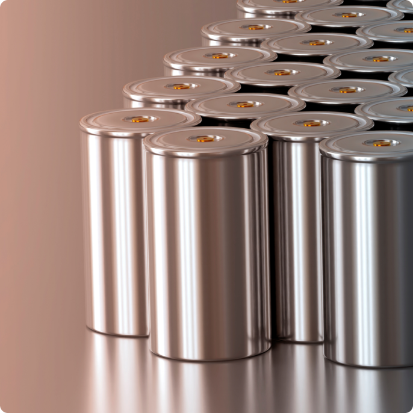
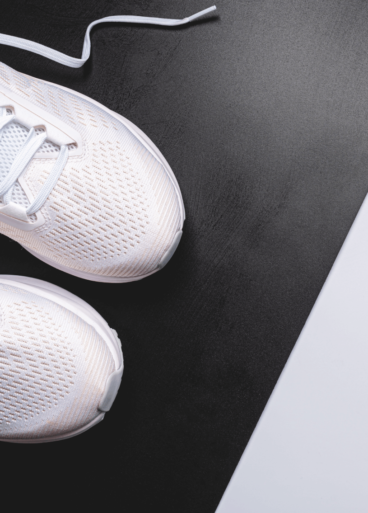
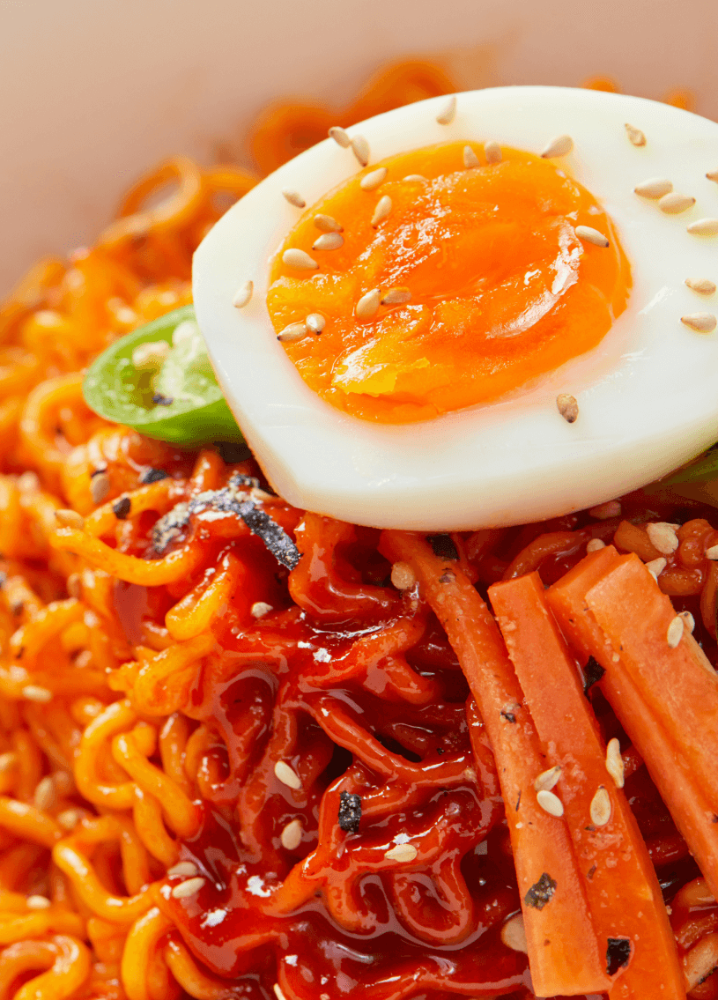
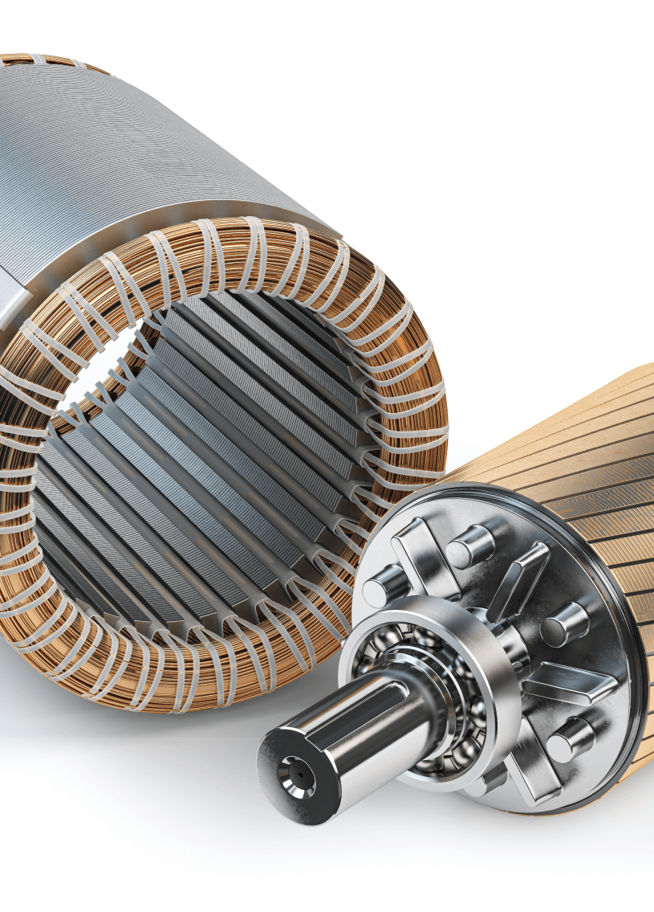
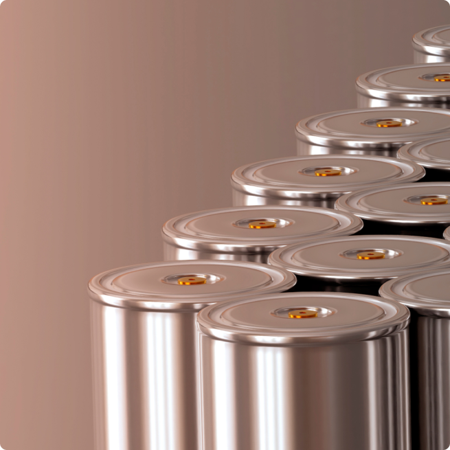
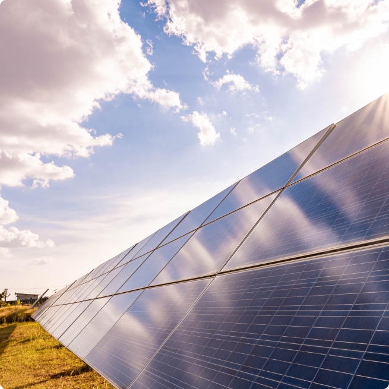
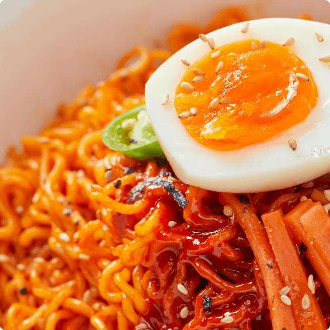
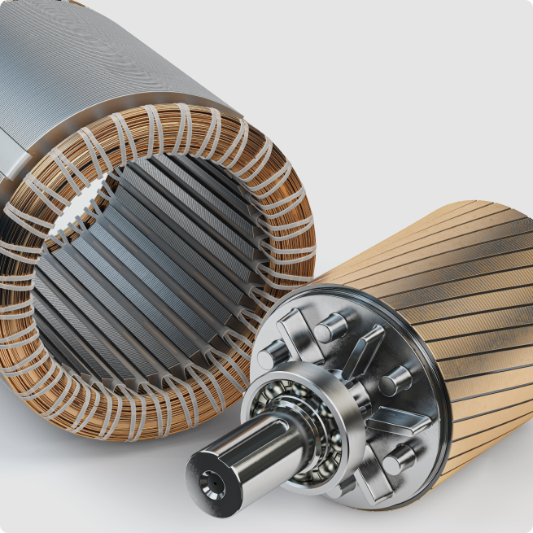

미라콤의 가치 스마트 팩토리 역량
Since 1998
대한민국 스마트팩토리 리더로
국내를 넘어 세계로
업계 최고의 기업들이 선택한
스마트팩토리 전문 기업
World’s Best Smart Factory
Total Solution Provider
차별점
차별점
25년간 제조업의 미래를
밝혀온 기술 선도 기업
-
- NO.1
-
세계에서 검증된 역량
아시아 기업 중 유일하게 글로벌 IT 시장조사
기관인 가트너의 ‘MES MQ 보고서’에 등재되어
스마트팩토리 전문성과 사업 역량을 인정받았습니다.
-
- 1,000명
-
국내 최고의 전문 인력 보유
대한민국에서 가장 많은 유수의 스마트팩토리 전문 인력이
최적의 스마트 공장 구축을 위한 연구개발을 거듭하며
고객 만족을 위해 최선을 다하고 있습니다.
-
- 21개 업종
-
최다 업종 BP 사례 보유
25개 중 21개의 최다 업종 BP 사례를 기반으로
각 산업군의 특징이 반영된 맞춤형 솔루션을
제공합니다.
+20
20개 이상 국가+350
국내외 350개 이상 고객 레퍼런스+70,000
7만대 이상의 설비 I/F 적용+700
700종류 이상의 설비 I/F 적용93 % *
임직원 중 IT 전문가 비율*2023년 1월 기준
+25
25년의 노하우+100
해외 100개 이상 공장가치제안
미라콤아이앤씨의 앞선 기술력으로
4차 산업혁명, 진화하는 공장.
제조 공정 자동화/지능화 실현
하나의 플랫폼으로
연결된 공장
표준화된 플랫폼에서 제조 현장 데이터를 수집,
분석하고 실시간 데이터 공유를 통해 단일 목표와
개선 전략 수립을 하여 기업 생산성을 향상 시킵니다.
1
한 눈에 보이는
스마트한 공장
경영 및 제조현황을 가시화하고 실시간 모니터링을
통해 문제를 즉시 파악하고 의사결정할 수 있는
눈에 보이는 공장 운영체계를 구축합니다.
2
최적의 생산 현장으로
이익을 실현하는 공장
사람에 의한 변동성 최소화 및 낭비요소 제거를
통해 모든 생산자원 (4M)*을 효과적으로 활용하여
최적의 스마트팩토리를 구현합니다.
*4M : Man(인력), Machine(설비), Material(자재), Method(작업방법)
3
무인화를 통한
자율생산이 가능한 공장
4차 산업혁명의 핵심 기술 (AI, IoT, Digital Twin)을
적용하여 제조 환경의 무인화, 지능화를 통한
자율생산 공장을 구축 합니다.
4
업종사례
미라콤아이앤씨와 함께한
글로벌 대표 기업의 성장
-

- Date. 2022
- 국내 이차전지 핵심 소재를 생산하는 고객사는 2019년부터 전국에 있는 제조 공장에 Nexplant MESplus를 적용하였고, 44대의 설비를 연동하여 설비 데이터를 수집할 수 있는 체계를 만들었습니다. 또 WMS와 ERP를 연동하여 통합 관리 체계를 구축하였습니다. 특히 산업 특성에 맞춘 설비별 주기, 정비 항목 보전 관리와 금형툴 관리 기능을 신규로 탑재하여 수명 관리와 예지보전이 가능해졌습니다. 스마트팩토리 구축을 통해 실물 기반의 위치 관리와 물류 동선 최소화로 업무 효율을 높여 글로벌 제품 경쟁력을 확보할 수 있었습니다.
- #MES #WMS #PLC
- Date. 2022
- 글로벌 신발 제조 전문기업인 고객사는 총 31개의 제조 라인에 MES를 구축했고, 표준 프로세스를 기반으로 해외 신발 산업 특성을 반영한 통합 시스템을 구축했습니다. SCM 생산계획 기반의 작업/불출지시 관리, 세트화 관리, 품질 관리 기능을 구축하여 생산성을 높인 고객사는 미라콤과의 지속적인 신뢰 관계를 바탕으로 해외 제2공장 및 신공장에 스마트팩토리를 확산할 계획입니다.
- #SCM
- Date. 2022
- 고객사는 태양광 모듈 점유율 1위 기업으로 글로벌 공장 인력 부족 이슈를 해결하기 위해 공장 자동화와 초고속 데이터 무정지 처리 체계를 구축했고, 분산된 제조 데이터를 본사로 통합한 글로벌 통합 관제 시스템을 구축하여 전 세계 곳곳에 있는 공장을 안정적으로 운영할 수 있게 되었습니다.
- #MES #Highway101 #설비자동화
- Date. 2022
- K-Food 대표 기업인 고객사는 제면, 포장, 스프 등 제조 전 과정에 MES와 HACCP(식품안전관리인증)를 적용하여 스마트팩토리를 구축했습니다. 300여대의 설비 데이터를 연동하여 봉지면, 용기면, 건면 등 제면라인과 스프 배합·믹스, 포장 등에 대해 레시피 관리와 칭량(秤量) 자동화 체계를 갖추고 KPI(성과지표) 분석, HACCP 관리, 운전데이터 수집자동화, 공정검사 효율 자동산출, 점검일지를 자동화 했습니다. 이를 통해 식품 업종에서 가장 중요한 요소인 불량 추적과 원인 분석을 실시간 점검할 수 있게 되어 해외 수출 식품에도 세밀한 안전 관리로 글로벌 식품 산업을 선도하는 기업의 위상을 높였습니다.
- #MES #QMS #MC #WMS #물류자동화
- Date. 2021
- 로봇팔에 사용하는 정밀 제어용 감속기 생산 기업인 고객사에 ERP 시스템 구축하여 시스템간 연계를 통해 생산량 30% 증가, 불량률 70% 감소, 납기 준수율 91%의 성과를 얻었고 고품질 제품을 제공하는 기업으로 성장할 수 있었습니다.
- #MES #ERP
-    